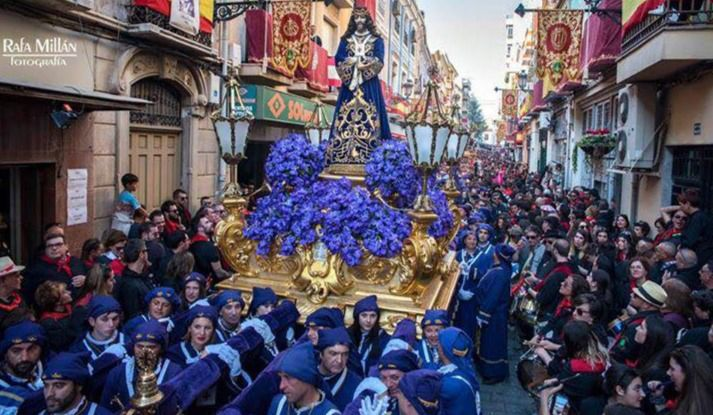
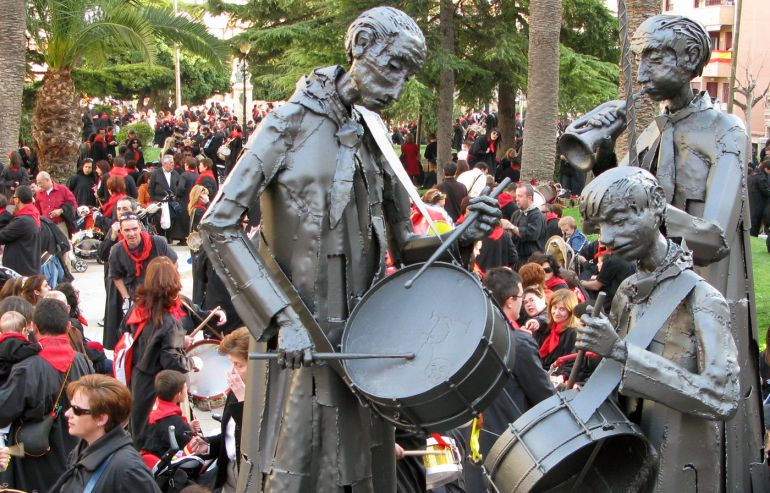

Semana Santa de Hellín
La semana santa de Hellín es, sin duda, una de nuestras costumbres más reconocidas fuera de la provincia. Y no es para menos, pues ya seas religioso o no, es una festividad que no deja indiferente a nadie.
Además de las típicas procesiones, reconocibles en tantos puntos de España, lo más distintivo de nuestra Semana Santa son sin duda, las tamboradas presentes cada vez más durante toda esta fiesta, en las cuales se reunen más de 20.000 personas, vestidas con una túnica negra y pañuelos rojos, para redoblar sus tambores y sobre todo, compartir con todos los demás.

Y es que los orígenes de esta forma de celebrar se remontan nada más y nada menos que a 1411, cuando San Vicente Ferrer recorria la población acompañado de cantores y músicos percusionistas predicando contra brujas y adivinos.
Y obligada mención al reencuentro producido el Domingo de Resurrección, en el cual se juntan todos los tamborileros para presenciar la representación del reencuentro de La Virgen y Cristo, callando todas las decenas de miles de tambores, para romper al unisono en el momento clave.
Una imagen vale más que mil palabras.
|
|
|